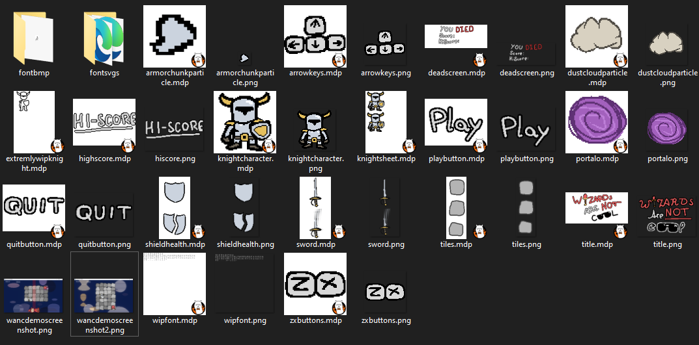

By MichaelLovesTea and StephenLovesTea
Not a huge fan of magic, mages and all that other fantasy nonsense?
Do you much preffer COOL knights, like this one?
Are you a fan of mages and fantasy nonsense?
First things first, shame on you. Seconds things second, have your wizard, weirdo.
Or are you looking for something to play?
In either case, we got you covered.
You are the knight, and you gotta dodge wizard spells. Simple as that.
Bad news, there might be a few complications on the job. Your movement is limited by a grid, which changes dimensions every so often, and there are multiple wizard types, and they shoot different types of super evil magic.
Good news, the cool knight gods bless you every so often with goodsies (like bandages and swords).
At the moment, much like alot of the game, the artwork is WIP.
Shoutout to Binky (michael's business associate) for providing the bandage sprite and making the knight able to spin:
The project is still in developement, so expect lots of changes. And take note that this is a hobby project, so it might not be finished in the near future, if at all.
If you have any suggestions or questions about the game, you can DM me on Discord, or send me an email at stephenlovestea@proton.me (STOP SUBSCRIBING ME TO CHRISTIAN NEWSLETTERS).
Not convinced that this game is AWESOME? Here are some reviews from real people all of whom (most of whom) played the game:
"Revolutionary game design, absolute masterpiece. MUST PLAY for everyone with a PC. 10/10" -stephenlovestea
"It's an unplayable mess, I'd rather speak to a woman than play this game (and women are scary)" -master_b8
"My wife left me after I bought too many copies of this game (and the woman I had an affair with also left me)." -jess.sua
"jess.sua stinks real bad" -master_b8
"I think I did pretty well" -michaellovestea